Helper text, side by side
The same five looks, next to each other: Current first, then A, B, C and D.
1. Three / Spotlight / Twist and their hint lines
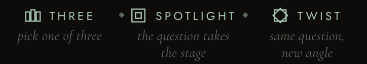
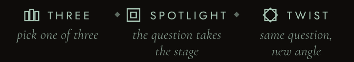
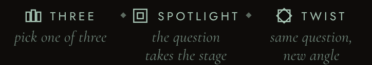
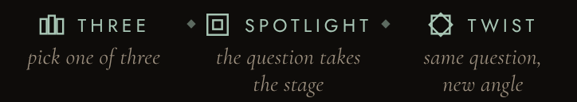
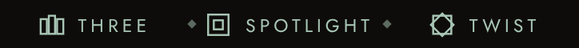
2. Title subtitle and "Selected deck · tap to change"
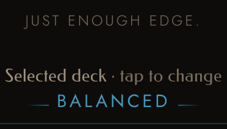
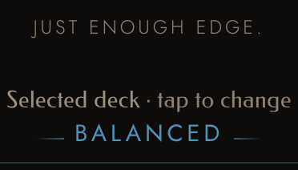
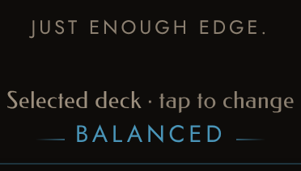
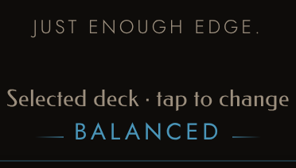
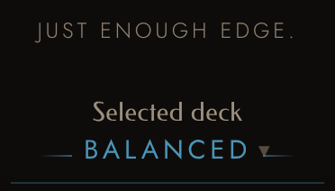
3. The Deck sheet: "Start from" and "Chapters"
Each look shows the "Start from" label above the "Chapters" label, cropped from the same sheet.


What each look is
- Current: what the app shows now. Nothing changes.
- A: every helper line moves to a tone the app already has (--btn-quiet; the three hints to the soft celadon). No size or weight change, no new value.
- B: the smallest tone step that passes (two new values), the hints a little larger (14 to 15 px) and the subtitle a little heavier. The main menu's sub-lines get lighter with it.
- C: every helper line, the hints included, in the one lighter warm grey that already exists (--muted-l). The hints leave the celadon family.
- D: the hint lines and "tap to change" are removed; a small caret after the deck name says it opens. The subtitle, "Start from" and "Chapters" are lifted to the A tone.
PC: the hints only show on hover there and already read well; no look changes them, so PC is left out.
The phone main screen, all five
For the overall feel: the real main screen at phone size with a card drawn.
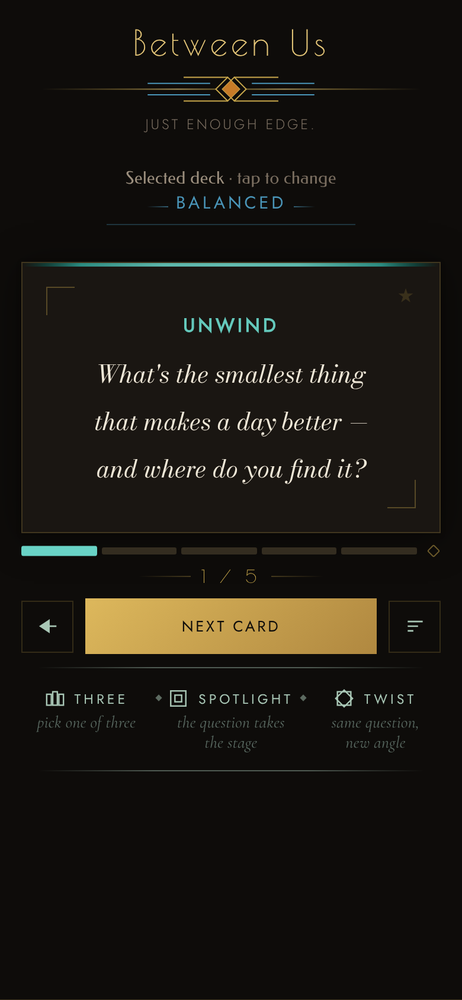
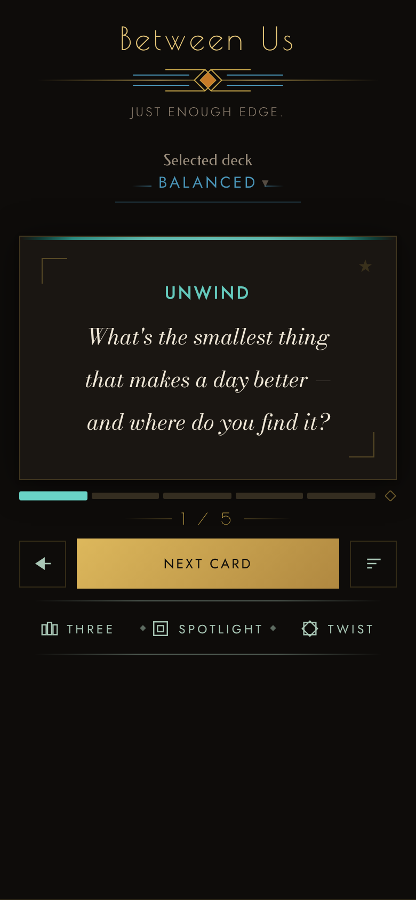
Measurements
Contrast against the real background of each line (goal 4.5:1 or better), unchanged from the first round.
| Line | Current | A | B | C | D |
|---|---|---|---|---|---|
| Subtitle | 3.93 | 5.16 | 5.06 | 6.18 | 5.16 |
| "· tap to change" | 3.93 | 5.16 | 5.06 | 6.18 | removed |
| Three / Spotlight / Twist hints | 3.47 | 6.21 | 4.93 | 6.18 | removed |
| "Start from" | 3.92 | 4.89 | 4.80 | 5.85 | 4.89 |
| "Chapters" | 3.72 | 4.89 | 4.80 | 5.85 | 4.89 |
Stylesheets: A, B, C, D. The first round's page is untouched in ../2026-10-21-helper-text-mockup/.